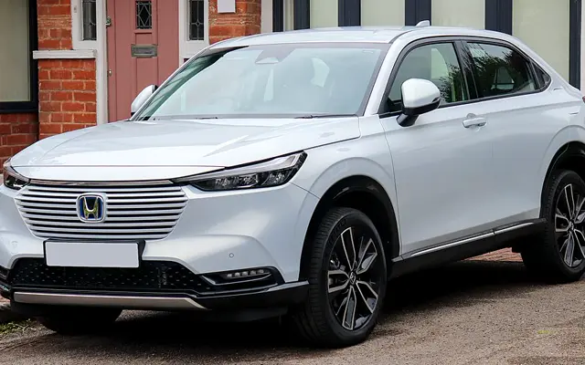

Par Motor › Precios por modelo › Honda HR-V
Precio de segunda mano · noviembre de 2026¿Cuánto vale un Honda HR-V de segunda mano?

Precio justo estimado de un Honda HR-V usado en España, año por año, con los kilómetros normales para su edad y en buen estado: de 4.100 € a 33.600 €. Para tasar el tuyo con sus kilómetros reales y su estado, usa el tasador gratis.
Precios del Honda HR-V por año
HR-V I (1999–2006)
Precio de nuevo: 1.6 105 CV, 18.000 € · 1.6 4WD 125 CV, 20.000 €
| Año | Km normales | 1.6 105 CV · Gasolina | 1.6 4WD 125 CV · Gasolina |
|---|---|---|---|
| 2006 | 100.000 km | 5.900 € | 6.600 € |
| 2005 | 100.000 km | 5.600 € | 6.200 € |
| 2004 | 100.000 km | 5.200 € | 5.800 € |
| 2003 | 100.000 km | 4.900 € | 5.500 € |
| 2002 | 100.000 km | 4.600 € | 5.200 € |
| 2001 | 100.000 km | 4.400 € | 4.900 € |
| 2000 | 100.000 km | 4.100 € | 4.600 € |
| 1999 | 100.000 km | 4.100 € | 4.500 € |
HR-V II (2015–2021)
Precio de nuevo: 1.5 130 CV, 21.000 € · 1.6 i-DTEC 120 CV, 24.000 € · 1.5 Turbo 182 CV, 28.000 €
| Año | Km normales | 1.5 130 CV · Gasolina | 1.6 i-DTEC 120 CV · Diésel | 1.5 Turbo 182 CV · Gasolina |
|---|---|---|---|---|
| 2021 | 80.000 km | 14.200 € | 14.800 € | 19.000 € |
| 2020 | 95.000 km | 12.600 € | 14.900 € | 16.800 € |
| 2019 | 100.000 km | 12.000 € | 14.900 € | 15.900 € |
| 2018 | 100.000 km | 11.800 € | 14.800 € | 15.800 € |
| 2017 | 100.000 km | 11.700 € | 14.700 € | 15.500 € |
| 2016 | 100.000 km | 11.500 € | 14.000 € | 15.300 € |
| 2015 | 100.000 km | 11.300 € | 13.100 € | 15.000 € |
HR-V III (2021–hoy)
Precio de nuevo: e:HEV 131 CV, 31.000 €
| Año | Km normales | e:HEV 131 CV · Híbrido |
|---|---|---|
| 2026 | 5.000 km | 33.600 € |
| 2025 | 20.000 km | 29.200 € |
| 2024 | 35.000 km | 27.500 € |
| 2023 | 50.000 km | 25.900 € |
| 2022 | 65.000 km | 24.400 € |
| 2021 | 80.000 km | 22.100 € |
Kilómetros normales: 15.000 al año en gasolina, híbridos y eléctricos, y 20.000 en diésel, con un máximo de 100.000 km (por encima no tasamos: el precio depende demasiado del historial de cada coche). Cifras redondeadas a 100 €.
Preguntas frecuentes
¿Cuánto vale un Honda HR-V de segunda mano?
Según el año, la versión y los kilómetros, un Honda HR-V usado vale hoy de 4.100 € a 33.600 € en España. El más barato de nuestra tabla es un 1.6 de 1999 (4.100 €) y el más caro un e:HEV de 2026 (33.600 €). Son precios justos estimados entre particulares y profesionales, con los kilómetros normales para su edad y en buen estado.
¿Cuánto valor pierde un Honda HR-V al año?
Con unos años encima, un Honda HR-V pierde alrededor de un 6 % de su valor cada año (calculado sobre el e:HEV de la generación HR-V III). Los primeros años la caída es mayor y a partir de los 70.000 km se acelera.
¿Qué motorizaciones tiene el Honda HR-V?
En nuestra base de datos hay versiones gasolina, diésel y híbrido, en 3 generaciónes: HR-V I, HR-V II y HR-V III.
¿Cómo sé si me piden demasiado por un Honda HR-V?
Abre el tasador de Par Motor, elige el Honda HR-V, el año y los kilómetros reales, y escribe lo que te piden. Te diremos si está por debajo del precio justo (chollo) o por encima (caro). Es gratis y no pide registro ni matrícula.
Otros Honda
Compara su coste real
El precio de compra es solo una parte. Mira cuánto te costaría al mes con combustible, seguro, neumáticos, mantenimiento y lo que pierde de valor.
Abrir el comparador →